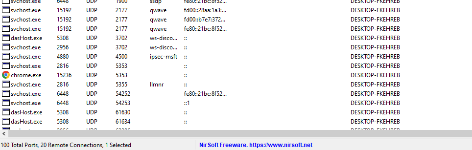
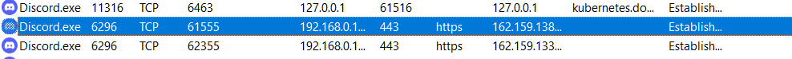
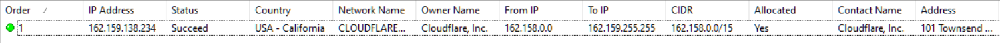
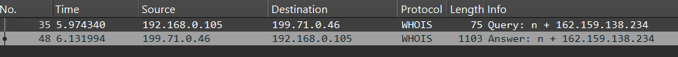
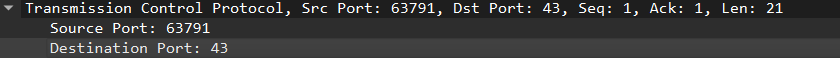
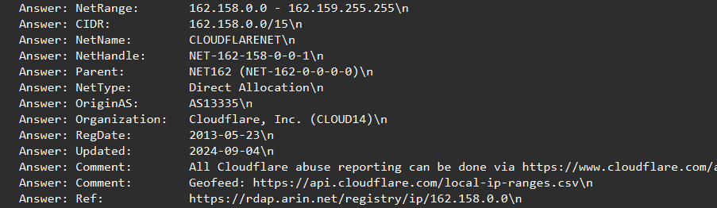

2. Socket Monitoring
2 Monitoring von Sockets¶
2.1) Wie viele Sockets sind insgesamt geöffnet?¶
- 100 total Ports 
{kind=link}
2.2) Wie unterscheiden sich die Einträge von TCP und UDP Sockets?¶
| Merkmal | TCP | UDP |
|---|---|---|
| Verbindung | Ja (Handshake) | Nein |
| Geschwindigkeit | Langsamer, aber sicher | Schneller, aber unsicher |
| Garantie | Reihenfolge + Fehlerfreiheit | Keine Garantie |
| State sichtbar? | Ja (LISTENING, ESTABLISHED usw.) | Nein (kein Verbindungsstatus) |
| Beispiel | Webseiten, Emails, SSH, FTP | Online-Spiele, Streaming, DNS |
| #### 2.3) Was bedeutet die Spalte „State“ bei TCP Sockets? |
- LISTENING: Socket wartet auf eingehende Verbindungen.
- ESTABLISHED: Verbindung ist aktiv und Daten fließen.
- TIMEWAIT: Verbindung wurde beendet, wartet noch auf vollständige Schließung.
- CLOSEWAIT: Andere Seite hat Verbindung beendet, aber eigene Seite noch nicht.
- SYNSENT / SYNRECEIVED: Verbindungsaufbau im Gange.
2.4) Wie viele Server Ports hat Ihr Rechner geöffnet (state=Listening)?¶
- Filter in CurrPorts auf
State = Listeningsetzen. - Nur die Einträge zählen, wo "Listening" steht.
- 37 Listening sockets. 82 total ports (TCP-Listening, UDP)
{kind=link}
2.5) Wie viele Sockets (ESTABLISHED) werden neu geöffnet, wenn Sie die Messung nach einer Minute erneut durchführen bzw. die Ergebnisse aktualisieren?¶
- Verbindungen Filtern, auswählen und speichern
- Messungen vergleichen
Erste Messung
| Prozessname | PID | Protokoll | Lokaler Port | Lokale IP | Remote Port | Remote IP | Remote Hostname | Status |
|---|---|---|---|---|---|---|---|---|
| svchost.exe | 3300 | TCP | 59265 | 192.168.178.48 | 443 | 172.211.123.249 | Established | |
| NortonSvc.exe | 3880 | TCP | 27196 | 192.168.178.48 | 443 | 23.48.23.63 | a23-48-23-63.deploy.static.akamaitechnologies.com | Established |
| NortonSvc.exe | 3880 | TCP | 49112 | 192.168.178.48 | 443 | 34.73.71.173 | 173.71.73.34.bc.googleusercontent.com | Established |
| nllToolsSvc.exe | 4052 | TCP | 6746 | 192.168.178.48 | 443 | 13.83.93.5 | Established | |
| nllToolsSvc.exe | 4052 | TCP | 27121 | 192.168.178.48 | 443 | 13.83.93.5 | Established | |
| chrome.exe | 12760 | TCP | 6737 | 192.168.178.48 | 5228 | 64.233.167.188 | wl-in-f188.1e100.net | Established |
| chrome.exe | 12760 | TCP | 27145 | 192.168.178.48 | 443 | 162.159.138.234 | Established | |
| chrome.exe | 12760 | TCP | 27178 | 192.168.178.48 | 443 | 104.18.30.192 | Established | |
| chrome.exe | 12760 | TCP | 27181 | 192.168.178.48 | 443 | 104.18.13.178 | Established | |
| chrome.exe | 12760 | TCP | 27186 | 192.168.178.48 | 443 | 34.36.71.237 | 237.71.36.34.bc.googleusercontent.com | Established |
| chrome.exe | 12760 | TCP | 27187 | 192.168.178.48 | 443 | 34.160.67.133 | 133.67.160.34.bc.googleusercontent.com | Established |
| chrome.exe | 12760 | TCP | 27194 | 192.168.178.48 | 443 | 23.50.131.29 | a23-50-131-29.deploy.static.akamaitechnologies.com | Established |
| chrome.exe | 12760 | TCP | 27195 | 192.168.178.48 | 443 | 104.18.32.47 | Established | |
| chrome.exe | 12760 | TCP | 27197 | 192.168.178.48 | 443 | 23.50.131.29 | a23-50-131-29.deploy.static.akamaitechnologies.com | Established |
| chrome.exe | 12760 | TCP | 27198 | 192.168.178.48 | 443 | 172.64.155.209 | Established | |
| chrome.exe | 12760 | TCP | 57480 | 192.168.178.48 | 443 | 162.159.135.234 | Established | |
| chrome.exe | 12760 | TCP | 57495 | 192.168.178.48 | 443 | 35.186.224.45 | 45.224.186.35.bc.googleusercontent.com | Established |
zweite Messung
| Prozessname | PID | Protokoll | Lokaler Port | Lokale IP | Remote Port | Remote IP | Remote Hostname | Status |
|---|---|---|---|---|---|---|---|---|
| svchost.exe | 3300 | TCP | 59265 | 192.168.178.48 | 443 | 172.211.123.249 | Established | |
| NortonSvc.exe | 3880 | TCP | 49112 | 192.168.178.48 | 443 | 34.73.71.173 | 173.71.73.34.bc.googleusercontent.com | Established |
| nllToolsSvc.exe | 4052 | TCP | 6746 | 192.168.178.48 | 443 | 13.83.93.5 | Established | |
| nllToolsSvc.exe | 4052 | TCP | 27121 | 192.168.178.48 | 443 | 13.83.93.5 | Established | |
| chrome.exe | 12760 | TCP | 6737 | 192.168.178.48 | 5228 | 64.233.167.188 | wl-in-f188.1e100.net | Established |
| chrome.exe | 12760 | TCP | 27145 | 192.168.178.48 | 443 | 162.159.138.234 | Established | |
| chrome.exe | 12760 | TCP | 27195 | 192.168.178.48 | 443 | 104.18.32.47 | Established | |
| chrome.exe | 12760 | TCP | 27198 | 192.168.178.48 | 443 | 172.64.155.209 | Established | |
| chrome.exe | 12760 | TCP | 57480 | 192.168.178.48 | 443 | 162.159.135.234 | Established | |
| chrome.exe | 12760 | TCP | 57495 | 192.168.178.48 | 443 | 35.186.224.45 | 45.224.186.35.bc.googleusercontent.com | Established |
| NortonSvc.exe | 3880 | TCP | 27201 | 192.168.178.48 | 443 | 2.16.168.103 | a2-16-168-103.deploy.static.akamaitechnologies.com | Established |
Ergebnis
| Typ | Prozessname | Lokaler Port | Remote-IP | Remote-Hostname | Bemerkung |
|---|---|---|---|---|---|
| Fehlt | NortonSvc.exe | 27196 | 23.48.23.63 | a23-48-23-63.deploy.static.akamaitechnologies.com | Verbindung geschlossen |
| Fehlt | chrome.exe | 27178 | 104.18.30.192 | Verbindung geschlossen | |
| Fehlt | chrome.exe | 27181 | 104.18.13.178 | Verbindung geschlossen | |
| Fehlt | chrome.exe | 27186 | 34.36.71.237 | 237.71.36.34.bc.googleusercontent.com | Verbindung geschlossen |
| Fehlt | chrome.exe | 27187 | 34.160.67.133 | 133.67.160.34.bc.googleusercontent.com | Verbindung geschlossen |
| Fehlt | chrome.exe | 27194 | 23.50.131.29 | a23-50-131-29.deploy.static.akamaitechnologies.com | Verbindung geschlossen |
| Fehlt | chrome.exe | 27197 | 23.50.131.29 | a23-50-131-29.deploy.static.akamaitechnologies.com | Verbindung geschlossen |
| Neu | NortonSvc.exe | 27201 | 2.16.168.103 | a2-16-168-103.deploy.static.akamaitechnologies.com | Neue Verbindung aufgebaut |
2.6) Sehen Sie zahlreiche Sockets mit IP-Adresse 127.0.0.1? Finden Sie heraus, wofür diese IP Adresse benutzt wird und blenden Sie alle Sockets mit dieser Adresse aus.¶
127.0.0.1 ist die sogenannte Loopback-Adresse, das bedeutet, dass dein eigener Computer redet mit sich selbst, also eine Netzwerkverbindung innerhalb deines Rechners.
Viele Programme brauchen eine Möglichkeit, intern Daten auszutauschen, zum Beispiel: - Ein Webbrowser (z.B. Chrome, Firefox) benutzt 127.0.0.1, wenn Plugins oder Erweiterungen lokal kommunizieren. - Entwicklungsumgebungen wie Visual Studio, XAMPP oder Docker verwenden 127.0.0.1, um Server und Datenbanken lokal zu betreiben (z.B. ein Webserver wie Apache läuft lokal). - Sicherheitssoftware (wie Antivirenprogramme) könnte sich selbst über 127.0.0.1 überwachen. - Spiele oder Apps, die lokale APIs benutzen (z.B. Discord Overlay für Spiele).
Beispiel:
- Man startet einen kleinen lokalen Webserver (z.B.
http://127.0.0.1:8080/), um eine Webseite zu testen, aber niemand aus dem Internet kann auf diese Webseite zugreifen.
Um diese Socketsauszublenden,gehst du so vor:
- Menü ->Options -> Advanced Filter
- Trage dort ein:
exclude:both:tcpudp:127.0.0.1
Die ganze 127.0.0.0/8 IP-Range (also von 127.0.0.0 bis 127.255.255.255) ist reserviert für Loopback. Aber fast immer wird einfach 127.0.0.1 genutzt.
2.7) Bestimmen Sie anhand der Portnummer und der Portliste für einige interessante/unbekannte Prozesse, mit welchem Protokoll diese kommunizieren.¶
- Bei der Bestimmung des Dienstes und Protokolls ist ausschließlich der Remote Port relevant, da der lokale Port vom Betriebssystem dynamisch vergeben wird und keine Zuordnung zu einem festen Protokoll hat.
| Prozessname | Lokaler Port | Remote Port | Zieladresse | Dienst / Protokoll laut Portliste | Bemerkung |
|---|---|---|---|---|---|
| svchost.exe | 59265 | 443 | 172.211.123.249 | HTTPS (TCP) | Verschlüsselte Webkommunikation |
| NortonSvc.exe | 27196 | 443 | 23.48.23.63 (a23-48-23-63.deploy.static.akamaitechnologies.com) | HTTPS (TCP) | Verbindung zu Cloud-Servern (Updates) |
| NortonSvc.exe | 49112 | 443 | 34.73.71.173 (173.71.73.34.bc.googleusercontent.com) | HTTPS (TCP) | Vermutlich Google Cloud-Server |
| nllToolsSvc.exe | 6746 | 443 | 13.83.93.5 | HTTPS (TCP) | Microsoft Azure Cloud-Server (vermutlich) |
| nllToolsSvc.exe | 27121 | 443 | 13.83.93.5 | HTTPS (TCP) | Microsoft Azure Cloud-Server (vermutlich) |
| chrome.exe | 6737 | 5228 | 64.233.167.188 (wl-in-f188.1e100.net) | Android Cloud Messaging (Google Services TCP) | Verbindungen zu Google-Diensten (Push) |
| chrome.exe | 27145 | 443 | 162.159.138.234 | HTTPS (TCP) | Webseitenbesuch oder Hintergrunddienste |
| chrome.exe | 57480 | 443 | 162.159.135.234 | HTTPS (TCP) | Webseitenbesuch oder Hintergrunddienste |
| NortonSvc.exe | 27201 | 443 | 2.16.168.103 (a2-16-168-103.deploy.static.akamaitechnologies.com) | HTTPS (TCP) | neue Verbindung zu Akamai-Server |
3 Details über die Kommunikationspartner ihres PCs¶
1) Finden Sie über WireShark heraus, wie das Programm „IPnetInfo“ die Informationen erhält. Welcher Server wird kontaktiert? Welches Protokoll wird verwendet?¶
Wir haben zuerst in CurrPorts ein Programm mit externer IP-Adresse markiert

und mit IPNetInfo abgefragt Währenddessen lief Wireshark im Hintergrund.
Um gezielt den Datenverkehr von IPNetInfo zu beobachten, haben wir im Filterfeld den Begriff whois verwendet.
Daraufhin bekamen wir folgendes Ergebnis
wo sichtbar wird, dass unser PC (192.168.0.105) eine Anfrage an den Server 199.71.0.46 gesendet hat. Das verwendete Protokoll ist WHOIS über TCP Port 43

{kind=link}
{kind=link}
{kind=link}
{kind=link}
{kind=link}
2) Im welchem Netz befindet sich der Web-Server, der in der ersten WireShark-Aufgabe aufgerufenen Web-Seite?¶
In der WHOIS-Antwort
konnten wir die Informationen zum Ziel-Server auslesen.
Der IP-Bereich 162.158.0.0/15 gehört zur Firma Cloudflare, Inc. mit Sitz in Kalifornien, USA. Das Netz trägt den Namen CLOUDFLARENET und ist direkt von ARIN vergeben worden. Weitere Infos wie die Organisation (AS13335), Registrierungs- und Aktualisierungsdaten sowie Hinweise zur Abuse-Meldung waren ebenfalls enthalten.
{kind=link}
3) Welche Informationen finden Sie über die HTWG?¶
Erstens, www.htwg-konstanz.de pingen:
PS C:\Users\mohsa\Github\Quartz> ping www.htwg-konstanz.de
Pinging cms.htwg-konstanz.de [141.37.20.31] with 32 bytes of data:
Reply from 141.37.20.31: bytes=32 time=1ms TTL=59
Reply from 141.37.20.31: bytes=32 time=1ms TTL=59
Reply from 141.37.20.31: bytes=32 time=1ms TTL=59
Reply from 141.37.20.31: bytes=32 time=1ms TTL=59
Ping statistics for 141.37.20.31:
Packets: Sent = 4, Received = 4, Lost = 0 (0% loss),
Approximate round trip times in milli-seconds:
Minimum = 1ms, Maximum = 1ms, Average = 1ms
```txt title="In IPNetInfo 141.37.20.31 eingegeben" {28-42} % This is the RIPE Database query service. % The objects are in RPSL format. % % The RIPE Database is subject to Terms and Conditions. % See https://docs.db.ripe.net/terms-conditions.html
% Information related to '141.37.0.0 - 141.37.255.255'
% Abuse contact for '141.37.0.0 - 141.37.255.255' is 'abuse@htwg-konstanz.de'
inetnum: 141.37.0.0 - 141.37.255.255 netname: FH-KN country: DE admin-c: HKTW1-RIPE tech-c: HKTW1-RIPE org: ORG-HKTW1-RIPE status: LEGACY remarks: ******* remarks: * DEFAULT ABUSE CONTACT: abuse@htwg-konstanz.de * remarks: ******* mnt-by: BELWUE-MNT mnt-by: RIPE-NCC-LEGACY-MNT created: 2002-04-25T09:54:38Z last-modified: 2016-04-14T08:23:18Z source: RIPE sponsoring-org: ORG-BA9-RIPE
organisation: ORG-HKTW1-RIPE org-name: Hochschule Konstanz Technik, Wirtschaft und Gestaltung country: DE org-type: OTHER address: Brauneggerstr. 55 address: 78462 Konstanz, Germany e-mail: netzwerk@htwg-konstanz.de admin-c: HKTW1-RIPE tech-c: HKTW1-RIPE abuse-c: HKTW1-RIPE mnt-ref: BELWUE-MNT mnt-by: BELWUE-MNT created: 2015-06-17T14:46:25Z last-modified: 2022-12-01T17:31:18Z source: RIPE
role: Hochschule Konstanz Technik, Wirtschaft und Gestaltung address: Brauneggerstr. 55 address: 78462 Konstanz, Germany e-mail: netzwerk@htwg-konstanz.de admin-c: MS3208-RIPE tech-c: MS3208-RIPE nic-hdl: HKTW1-RIPE abuse-mailbox: abuse@htwg-konstanz.de mnt-by: BELWUE-MNT created: 2015-06-17T14:46:25Z last-modified: 2015-06-18T11:34:36Z source: RIPE
% Information related to '141.37.0.0/16AS553'
route: 141.37.0.0/16 descr: FH-KONSTANZ origin: AS553 mnt-by: BELWUE-MNT created: 1970-01-01T00:00:00Z last-modified: 2001-09-22T09:32:38Z source: RIPE
% This query was served by the RIPE Database Query Service version 1.117 (ABERDEEN)
---
## 4 Sockets beim Laden einer Web-Seite
#### 1) Bestimmen Sie die Anzahl Sockets, die geöffnet werden, wenn Sie www.spiegel.de herunterladen. a) Wenn es Sie interessiert: vergleichen Sie die Anzahl der Sockets mit und ohne Ad-Blocker
Wir haben in CurrPorts alle aktiven Verbindungen gefiltert, die vom Browserprozess `chrome.exe` geöffnet wurden. Dabei haben wir jeweils nach dem Laden von Spiegel, die Anzahl der aktiven Sockets gezählt einmal mit und einmal ohne Adblocker.
- Ohne Adblocker wurden **45 Sockets** geöffnet.

- Mit aktiviertem Adblocker waren es nur **23 Sockets**.

-> Der Vergleich zeigt, dass der Einsatz eines Adblockers die Anzahl der geöffneten Verbindungen deutlich reduziert, da viele externe Inhalte z. B. Werbung, Tracking, Analytics nicht geladen werden.
#### 2) Was ist die maximale Anzahl von Sockets pro Remote-IP-Adresse?
Die Anzahl der Sockets pro Remote-IP-Adresse ist nicht begrenzt, solange genügend Ports verfügbar sind und die Server-Software die Verbindungen verarbeiten kann.
Ein Socket ist technisch definiert als Kombination aus lokaler IP-Adresse, lokalem Port, Remote-IP-Adresse und Remote-Port.
Auf Client-Seite stehen dafür **bis zu 65.536 Ports** zur Verfügung (durch die 16-Bit-Portnummern). Das bedeutet, dass ein Client theoretisch bis zu 65.536 gleichzeitige Verbindungen zu einer einzigen Remote-IP-Adresse aufbauen kann, sofern jede Verbindung einen anderen lokalen Port verwendet.
In der Praxis ist die maximale Anzahl jedoch durch mehrere Faktoren eingeschränkt:
- **Windows-Betriebssystem**:
Standardmäßig ist der Bereich für dynamische (ephemere) Ports auf z. B. **49152-65535** beschränkt, also etwa **16.384 Ports**.
Dieses Limit lässt sich mit dem Befehl
```powershell
netsh int ipv4 set dynamicport tcp start=1025 num=64510
3) Welche Remote-Ports werden verwendet?¶
Beim Zugriff auf Spiegel fällt auf, dass hauptsächlich der Port 443 verwendet wird.
Das ist sinnvoll, da dieser Port standardmäßig für das HTTPS-Protokoll reserviert ist, welches heute bei nahezu allen Webseiten zur verschlüsselten Kommunikation eingesetzt wird.
In CurrPorts oder Wireshark ist erkennbar, dass fast alle Verbindungen zu externen Servern den Remote-Port 443 nutzen. Weitere Ports (z. B. 80 für HTTP) kommen kaum noch vor, da moderne Webseiten standardmäßig HTTPS erzwingen.
4) Wie viele verschiedenen Firmen können Sie die Remote-Hosts zuordnen (am Besten über Contact Name in IPNetInfo)?¶
{kind=link}
| IP Address | Contact Name |
|---|---|
| 63.140.62.120 | Adobe Inc. |
| 63.140.62.210 | Adobe Inc. |
| 104.109.250.19 | Akamai International, BV |
| 108.128.223.16 | Amazon Data Services Ireland Limited |
| 54.76.180.38 | Amazon Technologies Inc. |
| 3.160.150.48 | Amazon.com, Inc. |
| 178.250.1.11 | Criteo Network Operations Center |
| 178.250.1.38 | Criteo Network Operations Center |
| 35.210.58.154 | Google LLC |
| 64.233.184.188 | Google LLC |
| 142.250.180.99 | Google LLC |
| 128.65.210.183 | Link11 GmbH Hostmaster |
| 150.171.27.10 | Microsoft Corporation |
| 150.171.30.10 | Microsoft Corporation |
| 80.67.82.90 | Network Architecture Role Account |
5) Laden Sie eine andere populäre Web-Seite und vergleichen Sie die Liste der kontaktierten Firmen.¶
Beispiel Zeit.de:¶
{kind=link}
| IP Address | Contact Name |
|---|---|
| 52.222.236.101 | Amazon.com, Inc. |
| 151.101.1.55 | Fastly, Inc. |
| 151.101.129.55 | Fastly, Inc. |
| 35.246.185.66 | Google LLC |
| 64.233.184.188 | Google LLC |
| 185.54.150.140 | Grigori Karlik |
| 167.235.124.61 | Hetzner Online GmbH - Contact Role |